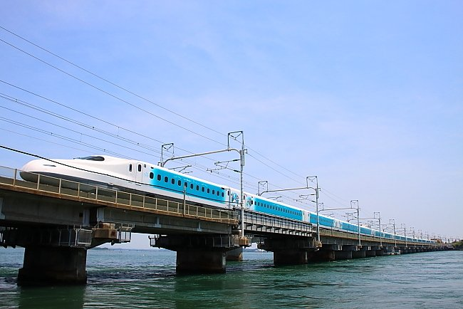

SEASONAL WINDOW NOTE
車窓で追いかける、Sparkling Dreams Shinkansen
東京ディズニーシー25周年を記念した特別塗装列車。公開ダイヤをもとに、自分の列車と、いつ・どこですれ違いそうかを目安として調べます。
運転計画は変更されることがあります。最新情報は必ず公式案内をご確認ください。

THE BASICS
まず知っておきたいこと
これは東京〜新大阪を、通常の公開ダイヤの列車として走る一編成の特別塗装列車です。車体には、東京ディズニーシーの8つのテーマポートを背景に、25周年の装いをしたディズニーキャラクターが描かれています。全体のデザインや最新の運転日は、JR東海の公式案内で確認できます。
このページは公式ガイドの代わりではありません。公開されている運転パターンを車窓向けに整理し、選んだ列車といつ・どこですれ違いそうか、窓の左右どちらを見ればよいかを概算します。運転日や時刻は公式情報を優先してください。
CHECK YOUR ENCOUNTER
あなたの列車と、すれ違う時刻
乗車日・方向・列車を選ぶと、反対方向の特別列車と交差しそうな場所を計算します。
ここに目安が表示されます
日付と列車を選んで計算してください。
PUBLISHED PATTERNS
運転パターンはA・B・C
日によって組み合わせが変わります。日付が未確定のときは、推測せず公式スケジュールを確認してください。
PATTERN A
A — 一日の往復
朝の西向き・東向きから、午後と夜の便まで走るパターンです。
- Hikari 636東向き（新大阪 → 東京）
- Kodama 815西向き（東京 → 新大阪）
- Kodama 836東向き（新大阪 → 東京）
- Hikari 659西向き（東京 → 新大阪）
PATTERN B
B — 朝の往復
朝のHikari 636と、折り返しのKodama 815を追います。
- Hikari 636東向き（新大阪 → 東京）
- Kodama 815西向き（東京 → 新大阪）
PATTERN C
C — 朝と夜の往復
朝のHikari 636と、夜のHikari 659を組み合わせるパターンです。
- Hikari 636東向き（新大阪 → 東京）
- Hikari 659西向き（東京 → 新大阪）
READ BEFORE YOU WATCH
計算結果について
表示時刻は、各列車の駅時刻と東海道新幹線の基準駅を結んだ線形補間による概算です。結果は「±5分を目安」に、少し早めに窓の外を見てください。
駅での停車・待避、線路や速度の運用、当日の遅れや運転変更によって、実際の見え方は変わります。列車が同じ特別運用に含まれる場合は、すれ違いではなく「その列車が特別列車」と表示します。
日付が未確定、または対象期間の外にある場合は計算しません。運転日・列車・時刻の最新情報は、下記の公式案内を優先してください。
OFFICIAL SOURCES
公式案内を確認する
このページは公式案内の要点を、車窓の楽しみ方に合わせて整理したものです。運転日や時刻の保証ではありません。